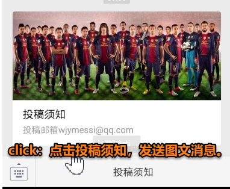

1.了解微信公众号
①明确概念
- 公众号与微信聊天的区别
- 公众号类型介绍
| 企业号：消息出现在好友会话列表首层、每分钟最多群发 200 条消息、通讯录关注、支持保密消息。
| 服务号：消息出现在好友会话列表首层、每周最多群发一条消息、查找关注。
| 订阅号：支持个人申请、每天最多群发一条消息、查找关注、不支持高级接口权限。
以下内容，仅针对订阅号。
②申请公众号
- 注册地址：微信公众平台
微信公众平台是腾讯为了让用户申请和管理微信公众账号而推出的一个 web 平台。
- 登记信息
- 填写账号名称和功能介绍
- 个性化公众号
③功能模块
- 可群发文字、图片、语音、视频或图文消息(每天 1 条)
- 自动回复
| 被添加自动回复
| 固定自动回复(每小时提示一次)
| 关键词自动回复(灵活) - 自定义菜单
| 最多三个 1 级菜单
| 最多五个 2 级菜单 - 投票功能(文章中加入)
- …
④管理模块
- 消息管理(回复消息)
- 用户管理(管理已关注的用户)
- 素材管理(保存公众号的群发内容)
⑤编辑模式
微信公众号开发的模式之一——编辑模式。
- 所谓编辑模式 就是在官网网页上操作基本功能
- 添加被关注自动回复
- 根据服务功能设置关键字回复(关注中英文差异)
- 素材管理
| 单图文消息可显示摘要，多图文消息只显示标题。
| 如下为多图文消息：
- 自定义菜单
| click 类型(发送消息)
| view 类型(跳转到网页)

- 群发消息(每天 1 次)
2.开发前奏
①开发准备
开发环境下，要想与微信后台对接，需要在公网上访问本机服务器 URL 地址(只能使用 80 端口 / 443 端口)。因此，需要用映射工具将本机地址映射到公网上。
- 一个微信公众号
- 外网映射工具(开发调试)
②映射工具
- ngrok：服务器在国外、访问速度慢、每次映射地址不同(现在国内有很多使用它的方法)。
- tunnel：部署在国内、支持 ngrok 的绝大数功能(现在不可用)。
- 正在使用 NATAPP.cn，教程见用NATAPP进行微信本地开发调试—1。
③访问模式
映射成功后，使用以下格式进行公网访问。
- 本地访问：http://localhost:8080/Test/index.jsp
- 对应的公网访问：(映射公网)/Test/index.jsp
3.开发模式
微信公众号开发的模式之一——开发模式。
注意：开发模式和编辑模式是互斥关系，两者的设置不共存。
只能使用一种模式，选择之后公众号会应用该模式的所有设置。
①数据交互原理
- 如下所示：

其中，微信公众号服务器就是我们在开发模式下需要开发的内容。
②开发模式接入
- 具体操作参见：用NATAPP进行微信本地开发调试—2
- 通过之前的操作 我们已经进入了开发模式
- 启用了开发模式 编辑模式的设置会自动失效
| 此时编辑模式下的自动回复和菜单栏都跑了。
附录
- 我的个人博客：messi1002.top
- 如有错误或疑惑之处 请联系 wjymessi@163.com